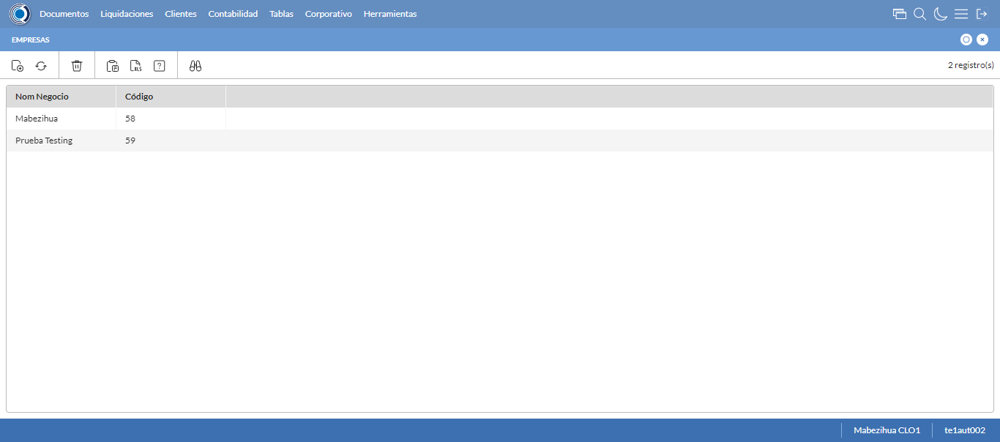

Desarrollado por : Area de Testing PWST
Fecha y hora de inicio : 2023-01-04 13:40:51
Duracion : 0:01:19.328982
Resultado : Total 8，Correctos 6 ，Errores 2 ，Taza de resultado 75.00%
Resumen 75.00% Errores 2 Fallidos 0 Correctos 6 Test realizados 8
| Caso de Prueba | Total | Correctos | Fallido | Error | Detalles | Captura del error |
| Empresas.Test: Escenario 1 de Empresas | 8 | 6 | 0 | 2 | Detalles | |
test |
ft1_1: 2023-01-04 13:40:52,897 - root - INFO - Se abre el chrome
2023-01-04 13:40:53,687 - root - INFO - Entra a la URL
2023-01-04 13:40:53,817 - root - INFO - Maximiza la pantalla
Traceback (most recent call last):
File "C:\Users\gerar\AppData\Local\Programs\Python\Python311\Lib\site-packages\selenium\webdriver\remote\switch_to.py", line 88, in frame
frame_reference = self._driver.find_element(By.ID, frame_reference)
^^^^^^^^^^^^^^^^^^^^^^^^^^^^^^^^^^^^^^^^^^^^^^^^^
File "C:\Users\gerar\AppData\Local\Programs\Python\Python311\Lib\site-packages\selenium\webdriver\remote\webdriver.py", line 861, in find_element
return self.execute(Command.FIND_ELEMENT, {"using": by, "value": value})["value"]
^^^^^^^^^^^^^^^^^^^^^^^^^^^^^^^^^^^^^^^^^^^^^^^^^^^^^^^^^^^^^^^^^
File "C:\Users\gerar\AppData\Local\Programs\Python\Python311\Lib\site-packages\selenium\webdriver\remote\webdriver.py", line 444, in execute
self.error_handler.check_response(response)
File "C:\Users\gerar\AppData\Local\Programs\Python\Python311\Lib\site-packages\selenium\webdriver\remote\errorhandler.py", line 249, in check_response
raise exception_class(message, screen, stacktrace)
selenium.common.exceptions.NoSuchElementException: Message: no such element: Unable to locate element: {"method":"css selector","selector":"[id="mainFrame"]"}
(Session info: chrome=108.0.5359.125)
Stacktrace:
Backtrace:
(No symbol) [0x00FAF243]
(No symbol) [0x00F37FD1]
(No symbol) [0x00E2D04D]
(No symbol) [0x00E5C0B0]
(No symbol) [0x00E5C22B]
(No symbol) [0x00E8E612]
(No symbol) [0x00E785D4]
(No symbol) [0x00E8C9EB]
(No symbol) [0x00E78386]
(No symbol) [0x00E5163C]
(No symbol) [0x00E5269D]
GetHandleVerifier [0x01249A22+2655074]
GetHandleVerifier [0x0123CA24+2601828]
GetHandleVerifier [0x01058C0A+619850]
GetHandleVerifier [0x01057830+614768]
(No symbol) [0x00F405FC]
(No symbol) [0x00F45968]
(No symbol) [0x00F45A55]
(No symbol) [0x00F5051B]
BaseThreadInitThunk [0x76347D69+25]
RtlInitializeExceptionChain [0x7731BB9B+107]
RtlClearBits [0x7731BB1F+191]
During handling of the above exception, another exception occurred:
Traceback (most recent call last):
File "C:\Users\gerar\AppData\Local\Programs\Python\Python311\Lib\site-packages\selenium\webdriver\remote\switch_to.py", line 91, in frame
frame_reference = self._driver.find_element(By.NAME, frame_reference)
^^^^^^^^^^^^^^^^^^^^^^^^^^^^^^^^^^^^^^^^^^^^^^^^^^^
File "C:\Users\gerar\AppData\Local\Programs\Python\Python311\Lib\site-packages\selenium\webdriver\remote\webdriver.py", line 861, in find_element
return self.execute(Command.FIND_ELEMENT, {"using": by, "value": value})["value"]
^^^^^^^^^^^^^^^^^^^^^^^^^^^^^^^^^^^^^^^^^^^^^^^^^^^^^^^^^^^^^^^^^
File "C:\Users\gerar\AppData\Local\Programs\Python\Python311\Lib\site-packages\selenium\webdriver\remote\webdriver.py", line 444, in execute
self.error_handler.check_response(response)
File "C:\Users\gerar\AppData\Local\Programs\Python\Python311\Lib\site-packages\selenium\webdriver\remote\errorhandler.py", line 249, in check_response
raise exception_class(message, screen, stacktrace)
selenium.common.exceptions.NoSuchElementException: Message: no such element: Unable to locate element: {"method":"css selector","selector":"[name="mainFrame"]"}
(Session info: chrome=108.0.5359.125)
Stacktrace:
Backtrace:
(No symbol) [0x00FAF243]
(No symbol) [0x00F37FD1]
(No symbol) [0x00E2D04D]
(No symbol) [0x00E5C0B0]
(No symbol) [0x00E5C22B]
(No symbol) [0x00E8E612]
(No symbol) [0x00E785D4]
(No symbol) [0x00E8C9EB]
(No symbol) [0x00E78386]
(No symbol) [0x00E5163C]
(No symbol) [0x00E5269D]
GetHandleVerifier [0x01249A22+2655074]
GetHandleVerifier [0x0123CA24+2601828]
GetHandleVerifier [0x01058C0A+619850]
GetHandleVerifier [0x01057830+614768]
(No symbol) [0x00F405FC]
(No symbol) [0x00F45968]
(No symbol) [0x00F45A55]
(No symbol) [0x00F5051B]
BaseThreadInitThunk [0x76347D69+25]
RtlInitializeExceptionChain [0x7731BB9B+107]
RtlClearBits [0x7731BB1F+191]
During handling of the above exception, another exception occurred:
Traceback (most recent call last):
File "C:\xampp\htdocs\versiones\automatizaciones\AutoPWST\01EMP\testCase\Empresas.py", line 30, in test
self.driver.switch_to.frame("mainFrame")
File "C:\Users\gerar\AppData\Local\Programs\Python\Python311\Lib\site-packages\selenium\webdriver\remote\switch_to.py", line 93, in frame
raise NoSuchFrameException(frame_reference)
selenium.common.exceptions.NoSuchFrameException: Message: mainFrame
|
|
||||
test_000: Ingresa a la base de datos |
pt1_2: 2023-01-04 13:40:56,907 - root - INFO - Escribe el usuario
2023-01-04 13:40:56,984 - root - INFO - Escribe la contraseña
2023-01-04 13:40:57,043 - root - INFO - Se dio clic en el boton ingresar
2023-01-04 13:40:57,766 - root - INFO - Ejecutar Enterprise
2023-01-04 13:41:01,800 - root - INFO - Cambia entre pestañas
|
|
||||
test_001: Abre menu y ejecuta pantalla |
pt1_3: 2023-01-04 13:41:13,842 - root - INFO - Abre la pantalla de Empresas
2023-01-04 13:41:14,901 - root - INFO - La pantalla ejecutada es Empresas
2023-01-04 13:41:14,901 - root - INFO - Captura: C:\xampp\htdocs\versiones\automatizaciones\AutoPWST\01EMP\report\img screen：20230104_13_41_14.png
2023-01-04 13:41:15,034 - root - INFO - Se presiona el boton 'Nuevo', para crear un nuevo registro.
|
 | ||||
test_002: Abre la ventana de nuevo y crear un registro |
pt1_4: 2023-01-04 13:41:16,080 - root - INFO - Se abrio la pantalla para el ingreso de un registro nuevo.
2023-01-04 13:41:16,138 - root - INFO - Ingresa el codigo del nuevo registro
2023-01-04 13:41:16,260 - root - INFO - Ingresa la descripción del nuevo registro
2023-01-04 13:41:16,342 - root - INFO - Ingresa el codigo alternativo del nuevo registro
2023-01-04 13:41:16,402 - root - INFO - Ingresa el codigo GLN del nuevo registro
2023-01-04 13:41:16,477 - root - INFO - Ingresa la Razón Social del nuevo registro
2023-01-04 13:41:16,559 - root - INFO - Ingresa la calle del nuevo registro
2023-01-04 13:41:16,630 - root - INFO - Ingresa la esquina 1 del nuevo registro
2023-01-04 13:41:16,704 - root - INFO - Ingresa la esquina 2 del nuevo registro
2023-01-04 13:41:16,816 - root - INFO - Ingresa el Telefono 1 del nuevo registro
2023-01-04 13:41:16,883 - root - INFO - Ingresa el Telefono 2 del nuevo registro
2023-01-04 13:41:16,953 - root - INFO - Ingresa el ruc del nuevo registro
2023-01-04 13:41:17,834 - root - INFO - Se dió doble click en el registro de Estado.
2023-01-04 13:41:19,061 - root - INFO - Se dió doble click en el registro de Depto/Provincia.
2023-01-04 13:41:20,275 - root - INFO - Se dió doble click en el registro de Localidad.
2023-01-04 13:41:23,546 - root - INFO - Se dió doble click en el registro de Barrio.
2023-01-04 13:41:23,671 - root - INFO - Ingresa las Observaciones del nuevo registro
2023-01-04 13:41:23,722 - root - INFO - Se dió click en el checkbox Resoluciones Fiscales.
2023-01-04 13:41:23,723 - root - INFO - Captura: C:\xampp\htdocs\versiones\automatizaciones\AutoPWST\01EMP\report\img screen：20230104_13_41_23.png
2023-01-04 13:41:23,893 - root - INFO - Ingresa el Num de la puerta del nuevo registro
2023-01-04 13:41:23,942 - root - INFO - Se hace el cambio a la pestaña Series para continuar con el registro nuevo
2023-01-04 13:41:24,508 - root - INFO - Se presiona el boton 'Nuevo', para crear un nuevo registro de Series.
2023-01-04 13:41:25,100 - root - INFO - Ingresa el Codigo del nuevo registro
2023-01-04 13:41:25,216 - root - INFO - Ingresa la Descripcion del nuevo registro
2023-01-04 13:41:25,275 - root - INFO - Ingresa el Codigo alternativo del nuevo registro
2023-01-04 13:41:25,316 - root - INFO - Se hace el cambio a la pestaña Configuración Vias para continuar con el registro nuevo
2023-01-04 13:41:25,881 - root - INFO - Se presiona el boton 'Nuevo', para crear un nuevo registro de Configuración Vias.
2023-01-04 13:41:26,469 - root - INFO - Ingresa el Tipo Documento del nuevo registro
2023-01-04 13:41:26,552 - root - INFO - Ingresa las Vias Backoffice del nuevo registro
2023-01-04 13:41:26,652 - root - INFO - Ingresa las Vias Mobile del nuevo registro
2023-01-04 13:41:26,753 - root - INFO - Ingresa la Descripción Vias del nuevo registro
2023-01-04 13:41:27,046 - root - INFO - Se presiona el boton 'Guardar', para guardar el registro de Configuracion Vias .
2023-01-04 13:41:27,313 - root - INFO - Se presiona el boton 'Guardar', para guardar el registro de Serie.
2023-01-04 13:41:27,630 - root - INFO - Se hace el cambio a la pestaña Calendario para continuar con el registro nuevo
2023-01-04 13:41:28,743 - root - INFO - Se dió click en el checkbox Lunes.
2023-01-04 13:41:28,796 - root - INFO - Se dió click en el checkbox Martes.
2023-01-04 13:41:28,846 - root - INFO - Se dió click en el checkbox Miercoles.
2023-01-04 13:41:28,896 - root - INFO - Se dió click en el checkbox Jueves.
2023-01-04 13:41:28,947 - root - INFO - Se dió click en el checkbox Viernes.
2023-01-04 13:41:29,000 - root - INFO - Se dió click en el checkbox Sabado.
2023-01-04 13:41:29,046 - root - INFO - Se hace el cambio a la pestaña Contabilidad para continuar con el registro nuevo
2023-01-04 13:41:29,678 - root - INFO - Ingresa la fecha Desde del nuevo registro
2023-01-04 13:41:29,795 - root - INFO - Ingresa la fecha Hasta del nuevo registro
2023-01-04 13:41:29,848 - root - INFO - Se da clic en el boton Guardar; se debe crear un nuevo registro.
|

|
||||
test_003: Repetir el registro creado anteriormente |
pt1_5: 2023-01-04 13:41:30,883 - root - INFO - Se presiona el boton 'Refrescar', para crear un nuevo registro igual al anterior.
2023-01-04 13:41:32,938 - root - INFO - Se presiona el boton 'Nuevo', para crear un nuevo registro igual al anterior.
2023-01-04 13:41:33,988 - root - INFO - Se abrio la pantalla para el ingreso de un registro nuevo.
2023-01-04 13:41:34,043 - root - INFO - Ingresa el codigo del nuevo registro
2023-01-04 13:41:34,169 - root - INFO - Ingresa la descripción del nuevo registro
2023-01-04 13:41:34,228 - root - INFO - Ingresa el codigo alternativo del nuevo registro
2023-01-04 13:41:34,290 - root - INFO - Ingresa el codigo GLN del nuevo registro
2023-01-04 13:41:34,361 - root - INFO - Ingresa la Razón Social del nuevo registro
2023-01-04 13:41:34,442 - root - INFO - Ingresa la calle del nuevo registro
2023-01-04 13:41:34,511 - root - INFO - Ingresa la esquina 1 del nuevo registro
2023-01-04 13:41:34,584 - root - INFO - Ingresa la esquina 2 del nuevo registro
2023-01-04 13:41:34,654 - root - INFO - Ingresa el Telefono 1 del nuevo registro
2023-01-04 13:41:34,716 - root - INFO - Ingresa el Telefono 2 del nuevo registro
2023-01-04 13:41:34,787 - root - INFO - Ingresa el ruc del nuevo registro
2023-01-04 13:41:35,660 - root - INFO - Se dió doble click en el registro de Estado.
2023-01-04 13:41:36,825 - root - INFO - Se dió doble click en el registro de Depto/Provincia.
2023-01-04 13:41:37,942 - root - INFO - Se dió doble click en el registro de Localidad.
2023-01-04 13:41:39,291 - root - INFO - Se dió doble click en el registro de Barrio.
2023-01-04 13:41:39,498 - root - INFO - Ingresa las Observaciones del nuevo registro
2023-01-04 13:41:39,625 - root - INFO - Se dió click en el checkbox Resoluciones Fiscales.
2023-01-04 13:41:39,695 - root - INFO - Ingresa el Num de la puerta del nuevo registro
2023-01-04 13:41:39,743 - root - INFO - Se hace el cambio a la pestaña Contabilidad para continuar con el registro nuevo
2023-01-04 13:41:40,349 - root - INFO - Ingresa la fecha Desde del nuevo registro
2023-01-04 13:41:40,463 - root - INFO - Ingresa la fecha Hasta del nuevo registro
2023-01-04 13:41:40,512 - root - INFO - Se da clic en el boton Guardar; NO se debe crear un nuevo registro.
2023-01-04 13:41:41,079 - root - INFO - Se da clic en el boton del mensaje de registro duplicado
2023-01-04 13:41:43,080 - root - INFO - Captura: C:\xampp\htdocs\versiones\automatizaciones\AutoPWST\01EMP\report\img screen：20230104_13_41_43.png
2023-01-04 13:41:43,249 - root - INFO - Se presiona el boton 'Cerrar', para cerrar el mensaje de duplicidad de llave primaria
2023-01-04 13:41:43,360 - root - INFO - Se presiona el boton 'Cerrar', para cerrar la ventana
|
|||||
test_004: Modificar el registro |
pt1_6: 2023-01-04 13:41:43,473 - root - INFO - Se presiona el boton 'Refrescar', para proceder a modificar el registro.
2023-01-04 13:41:46,039 - root - INFO - Se da clic en el registro creado, para proceder a modificarlo.
2023-01-04 13:41:47,246 - root - INFO - Se modifica el contenido del campo Descripción
2023-01-04 13:41:47,332 - root - INFO - Se modifica el contenido del campo Codigo Alternativo
2023-01-04 13:41:47,415 - root - INFO - Se modifica el contenido del campo Codigo GLN
2023-01-04 13:41:47,539 - root - INFO - Se modifica el contenido del campo Razón Social
2023-01-04 13:41:47,672 - root - INFO - Se modifica el contenido del campo Calle
2023-01-04 13:41:47,791 - root - INFO - Se modifica el contenido del campo Esquina 1
2023-01-04 13:41:47,884 - root - INFO - Se modifica el contenido del campo Esquina 2
2023-01-04 13:41:47,984 - root - INFO - Se modifica el contenido del campo telefono 1
2023-01-04 13:41:48,086 - root - INFO - Se modifica el contenido del campo telefono 2
2023-01-04 13:41:48,176 - root - INFO - Se modifica el contenido del campo RUC
2023-01-04 13:41:49,554 - root - INFO - Se dió doble click en el registro de Estado.
2023-01-04 13:41:50,782 - root - INFO - Se dió doble click en el registro de Depto/Provincia.
2023-01-04 13:41:51,895 - root - INFO - Se dió doble click en el registro de Localidad.
2023-01-04 13:41:53,045 - root - INFO - Se dió doble click en el registro de Barrio.
2023-01-04 13:41:53,301 - root - INFO - Se modifica el contenido del campo Observaciones
2023-01-04 13:41:53,342 - root - INFO - Se dió click en el checkbox Resoluciones Fiscales.
2023-01-04 13:41:53,343 - root - INFO - Captura: C:\xampp\htdocs\versiones\automatizaciones\AutoPWST\01EMP\report\img screen：20230104_13_41_53.png
2023-01-04 13:41:53,547 - root - INFO - Se modifica el contenido del campo Num de Puerta
2023-01-04 13:41:53,598 - root - INFO - Se hace el cambio a la pestaña Series para continuar con la modificación del registro
2023-01-04 13:41:54,668 - root - INFO - Se da clic en el registro de Series, para proceder a modificarlo.
2023-01-04 13:41:55,334 - root - INFO - Se modifica el contenido del campo Descripción
2023-01-04 13:41:55,439 - root - INFO - Se modifica el contenido del campo Codigo Alternativo
2023-01-04 13:41:55,479 - root - INFO - Se hace el cambio a la pestaña Configuración de Vías para continuar con la modificación del registro
2023-01-04 13:41:56,565 - root - INFO - Se da clic en el registro de Configuración Vías, para proceder a modificarlo.
2023-01-04 13:41:57,299 - root - INFO - Se modifica el contenido del campo Tipo Documento
2023-01-04 13:41:57,448 - root - INFO - Se modifica el contenido del campo Vías Backoffice
2023-01-04 13:41:57,583 - root - INFO - Se modifica el contenido del campo Vías Mobile
2023-01-04 13:41:57,738 - root - INFO - Se modifica el contenido del campo Descripción
2023-01-04 13:41:58,006 - root - INFO - Se presiona el boton 'Guardar', para guardar la modificación del registro de Configuración Vías.
2023-01-04 13:41:58,200 - root - INFO - Se presiona el boton 'Guardar', para guardar la modificación del registro Series.
2023-01-04 13:41:58,410 - root - INFO - Se hace el cambio a la pestaña Calendario para continuar con la modificación del registro
2023-01-04 13:41:59,503 - root - INFO - Se dió click en el checkbox Lunes.
2023-01-04 13:41:59,553 - root - INFO - Se dió click en el checkbox Miercoles.
2023-01-04 13:41:59,603 - root - INFO - Se dió click en el checkbox Sabado.
2023-01-04 13:41:59,655 - root - INFO - Se hace el cambio a la pestaña Resoluciones Fiscales para continuar con la modificación del registro
2023-01-04 13:42:00,215 - root - INFO - Se presiona el boton 'Nuevo', para crear un nuevo registro de Resoluciones Fiscales.
2023-01-04 13:42:01,635 - root - INFO - Se dió doble click en el registro de Serie.
2023-01-04 13:42:01,769 - root - INFO - Ingresa el Num de la puerta del nuevo registro
2023-01-04 13:42:01,881 - root - INFO - Ingresa el Rango Inicio del nuevo registro
2023-01-04 13:42:01,964 - root - INFO - Ingresa el Rango Fin del nuevo registro
2023-01-04 13:42:02,003 - root - INFO - Se da clic en el boton Guardar; se debe guardar el registro de Resolución Fiscal.
2023-01-04 13:42:02,330 - root - INFO - Se da clic en el boton Guardar; se debe modificar la informacion del registro.
|

|
||||
test_005: Eliminar el registro creado |
ft1_7: 2023-01-04 13:42:03,387 - root - ERROR - No se dió click en el botón Refrescar, validar que la acción anterior haya finalizado, que el xpath sea el correcto o que la página no presente lentitud
2023-01-04 13:42:06,388 - root - INFO - Captura: C:\xampp\htdocs\versiones\automatizaciones\AutoPWST\01EMP\report\img screen：20230104_13_42_06.png
2023-01-04 13:42:10,786 - root - INFO - Se cierra chrome
Traceback (most recent call last):
File "C:\xampp\htdocs\versiones\automatizaciones\AutoPWST\01EMP\testCase\Empresas.py", line 136, in test_005
raise Exception()
Exception
|
|||||
test_006: Cerrar_Navegador |
Correcto |
|
||||
| Caso de prueba | 8 | 6 | 0 | 2 | Taza de resultado：75.00% | |